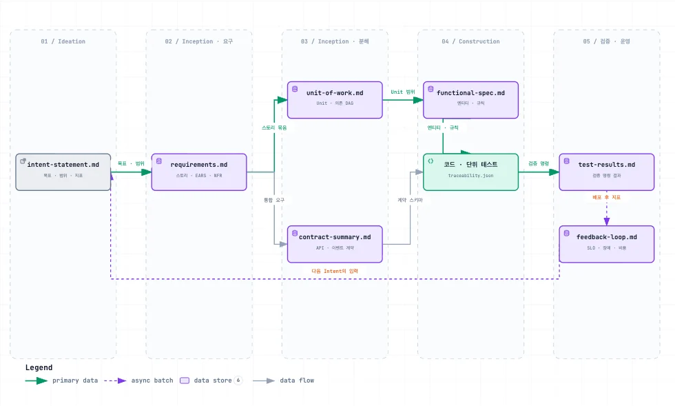

AI가 읽을 설계를 쓴다
AI-DLC에서 설계 문서는 사람에게 보여 주는 보고서가 아니라 다음 단계에서 AI가 읽을 입력이다. CJ올리브영의 결론대로 설계 문서의 품질이 생성 코드의 정확도를 정한다. 이 장은 한 가지 예시, 사내 회의실 예약 서비스로 Intent부터 ADR까지 설계를 층층이 쌓아 본다.
설계의 층
위층이 승인돼야 아래층을 만든다. 각 층의 산출물이 다음 층의 컨텍스트가 되므로, 위층의 빈틈은 아래로 갈수록 커진다. 오른쪽 열은 aidlc-workflows v2에서 그 층을 맡는 스테이지다.
| 층 | 답하는 질문 | 산출물 | 사람이 확정할 것 | v2 스테이지 |
|---|---|---|---|---|
| 1 Intent | 왜, 무엇을, 어떻게 성공을 재나 | 목표, 성공 지표, 범위 안·밖, 제약 | 범위 밖 목록, 지표 | Intent Capture, Scope Definition |
| 2 요구사항 | 누가 무엇을 할 수 있어야 하나 | 스토리, EARS 수용 기준 | 수용 기준이 테스트 가능한가 | Requirements Analysis, User Stories |
| 3 NFR·위험 | 얼마나 빠르고 안전해야 하나 | 측정 가능한 NFR, 위험 레지스터 | 목표 수치, 위험 대응 | Feasibility, NFR Requirements |
| 4 Unit | 어디서 나누나 | Unit 목록, 의존 DAG, 스토리 매핑, Bolt 계획 | 경계와 순서 | Units Generation, Delivery Planning |
| 5 계약 | Unit끼리 무엇을 주고받나 | API·이벤트 스키마, 데이터 소유권 | 필드, 오류, 버전 정책 | Contract Design |
| 6 도메인 | 비즈니스 규칙은 무엇인가 | 애그리거트, 엔티티, 값 객체, 이벤트, 불변식 | 엣지 케이스 | Domain Design, Functional Design |
| 7 논리 | NFR을 어떤 구조로 지키나 | 패턴 선택, ADR | 트레이드오프 | NFR Design, Infrastructure Design |
| 8 검증 | 무엇이 "끝"인가 | 테스트 전략, 검증 명령 | 검증 명령 자체 | Delivery Planning, Build and Test |

1. Intent
Intent는 짧아야 하지만 비어 있으면 안 된다. AI가 분해를 시작할 출발점이라, 여기 없는 제약은 끝까지 없다. 특히 범위 밖과 사람이 결정해야 할 것을 비워 두지 않는다. 아래 수치는 설명을 위한 예시다.
# INT-1 회의실 예약을 셀프서비스로 바꾼다
## 목표
직원이 총무팀에 묻지 않고 회의실을 직접 예약·취소한다.
## 왜 지금
예약 문의가 주 120건, 이중 예약 분쟁이 월 8건이다.
## 성공 지표
- SC-1 예약 문의 주 120건 → 20건 이하 (도입 4주 뒤)
- SC-2 이중 예약 0건
- SC-3 예약 생성 API p95 300ms 이하 (동시 50요청)
## 범위 안
예약 생성·조회·취소, 회의실 목록, 충돌 방지, 그룹웨어 캘린더 반영
## 범위 밖
반복 예약, 외부 손님 초대, 화상회의 연동, 결제
## 제약
- 인증은 사내 SSO(JWT)만
- 개인정보는 예약자 사번·이름 외 저장 금지
- 조직 표준: Spring Boot 3, PostgreSQL
## 사람이 결정해야 할 것
- 취소 마감은 시작 30분 전인가, 1시간 전인가
- 관리자의 강제 취소를 허용하나흔한 실수
"회의실 예약 시스템을 만든다" 한 줄로 시작하면 AI가 반복 예약, 결제, 손님 초대까지 그럴듯하게 채운다. 범위 밖을 적지 않으면 범위가 AI의 상상만큼 커진다.
2. 요구사항: 스토리와 EARS
사용자 스토리는 사람과 AI가 이해를 맞추는 계약이다(화이트페이퍼 원칙 6). 스토리마다 우선순위(P1~P3)를 달고 수용 기준은 테스트로 바로 옮길 수 있는 형식으로 쓴다. Kiro와 이 저장소의 템플릿이 쓰는 EARS(Easy Approach to Requirements Syntax)가 그 형식이다. 문장 하나에 동작 하나만 담는다.
| 패턴 | 형식 | 예 |
|---|---|---|
| 항상 | 시스템은 <동작>해야 한다 | R1.1 시스템은 예약 시간을 30분 단위로만 받아야 한다. |
| 사건 | <사건>하면 시스템은 <동작>해야 한다 | R1.2 사용자가 예약을 요청하면 시스템은 같은 회의실에 겹치는 예약이 있는지 확인해야 한다. |
| 상태 | <상태>인 동안 시스템은 … | R1.4 회의실이 점검 중인 동안 시스템은 그 회의실의 새 예약을 거부해야 한다. |
| 원치 않는 상황 | 만약 <조건>이면 시스템은 … | R1.3 만약 겹치는 예약이 있으면 시스템은 409와 겹친 예약의 시간을 돌려줘야 한다. |
| 선택 기능 | <기능>이 켜진 경우 시스템은 … | R5.1 캘린더 연동이 켜진 경우 시스템은 예약을 그룹웨어 캘린더에 반영해야 한다. |
모르는 것은 추측하지 않고 표시해 둔다. 이 저장소가 쓰는 규약은 [NEEDS CLARIFICATION: 취소 마감은 시작 몇 분 전인가?]이고 개수는 최대 3개, 우선순위는 범위 > 보안·개인정보 > UX > 기술 순이다. 표시가 남아 있으면 그 문서는 아직 승인할 수 없다.
3. NFR과 위험
"빠르게", "안전하게"는 NFR이 아니다. 목표, 측정 조건, 검증 방법이 모두 있어야 AI가 그것을 패턴과 테스트로 바꿀 수 있다.
| ID | 항목 | 목표 | 측정 조건 | 검증 |
|---|---|---|---|---|
| NFR-1 | 응답 시간 | 예약 생성 p95 ≤ 300ms | 동시 50요청, 회의실 200개, 예약 10만 건 | 부하 테스트 |
| NFR-2 | 정합성 | 같은 슬롯 동시 요청 중 1건만 성공 | 동시 20요청 | 동시성 통합 테스트 |
| NFR-3 | 가용성 | 캘린더 연동이 죽어도 예약은 된다 | 그룹웨어 API 타임아웃 | 장애 주입 테스트 |
| NFR-4 | 개인정보 | 로그에 이름을 남기지 않는다 | 전 로그 경로 | 로그 스캔 테스트 |
위험은 조직의 위험 레지스터와 같은 형식으로 쓴다. 그래야 AI가 만든 계획과 코드가 조직의 위험 기준을 지키는지 대조할 수 있다(원칙 6).
| ID | 위험 | 가능성 · 영향 | 대응 | 담당 |
|---|---|---|---|---|
| RISK-1 | 그룹웨어 API 속도 제한으로 동기화 지연 | 중 · 중 | 비동기 큐 + 재시도, 지연 알림 | 개발 리드 |
| RISK-2 | 타임존 혼동(서버 UTC, 사용자 KST)으로 시간이 밀림 | 중 · 상 | 저장은 UTC timestamptz, 표시만 KST. 경계 시각 테스트 | 개발자 |
4. Unit 분해
Unit은 AI-DLC 설계의 중심이라서 잘 나누면 Unit마다 병렬로 만들고 따로 배포할 수 있고 잘못 나누면 모든 Bolt가 서로를 기다린다.
나눌지 말지
decisions-driven skill의 복잡도 판정 기준. 하나라도 해당하면 분해 단계를 돈다.
다음 중 하나라도 해당하면 나눈다. 스토리 5개 이상, 도메인 2개 이상, 사용자 유형 3개 이상, 외부 통합 3개 이상. 아니면 Unit 하나로 바로 Construction에 들어간다.
나누는 기준
- 바뀌는 이유가 같은 것끼리 묶는다. DDD의 서브도메인, 바운디드 컨텍스트가 출발점이다.
- 데이터는 한 Unit만 쓴다. 다른 Unit은 계약(API·이벤트)으로만 읽는다.
- 한 Bolt에 검증할 수 있는 크기로. 에이전트가 컨텍스트에 한 번에 담고 팀이 한 번에 검증할 수 있어야 한다.
- 혼자 시연할 수 있어야 한다. 독립적으로 테스트하고 배포할 수 있는가.
이렇게 나누지 않는다
- 레이어로 자르기: 프론트엔드 Unit, 백엔드 Unit, DB Unit. 모든 기능이 세 Unit을 다 건드린다.
- 사람으로 자르기: 담당자마다 Unit 하나. sddev가 경고한 사일로가 생긴다.
- 에픽 크기: 한 Bolt에 끝나지 않으면 쪼갠다.
- 너무 잘게: 혼자서는 가치가 없고 계약 문서가 구현보다 크고 늘 다른 Unit과 함께 바뀐다면 합친다.
회의실 예약의 분해
스토리 5개, 외부 통합 2개(SSO, 그룹웨어) → 분해 대상. 인증은 사내 SSO를 그대로 쓰므로 Unit으로 만들지 않는다.
회의실, 설비, 운영 시간, 점검 상태. 회의실 데이터의 주인.
생성, 취소, 충돌 규칙. 예약 데이터의 주인. 핵심 Unit.
그룹웨어 반영, 재시도. 예약 이벤트를 구독만 한다.
| 스토리 | P | Unit | 읽는 계약 |
|---|---|---|---|
| US-1 빈 회의실을 골라 예약한다 | P1 | U-2 | U-1 회의실 조회 API |
| US-2 내 예약을 본다 | P1 | U-2 | — |
| US-3 내 예약을 취소한다 | P1 | U-2 | — |
| US-4 회의실과 설비를 찾아본다 | P2 | U-1 | — |
| US-5 예약이 그룹웨어 캘린더에 뜬다 | P2 | U-3 | U-2 ReservationCreated·Cancelled 이벤트 |
의존 순서: U-1 → U-2 → U-3. 먼저 만든 Unit이 계약을 내놓고 뒤 Unit이 소비한다.
5. 계약 먼저
CJ올리브영이 가장 크게 배운 것이 이것이다. "AI 기반 병렬 개발일수록 인터페이스 선정의가 중요해진다." Unit이 둘 이상이면 구현 전에 계약을 쓰고 승인한다. v2에서는 이것이 별도 스테이지(Contract Design)다. 계약에는 다음이 들어간다.
- 연산(엔드포인트, 이벤트 이름)과 요청·응답 스키마, 필수 필드
- 오류 코드와 각각의 의미. 정상 경로보다 이쪽이 통합에서 더 자주 깨진다
- 멱등성: 같은 요청이 두 번 오면 어떻게 되나
- 데이터 소유권: 누가 쓰고 누가 읽기만 하나
- 버전 정책: 필드를 추가·삭제할 때의 규칙

# contracts/reservation.yaml (발췌)
paths:
/reservations:
post:
operationId: createReservation
parameters:
- { name: Idempotency-Key, in: header, required: true }
responses:
'201': 예약 생성됨
'409': 겹치는 예약 있음. conflicts[] 에 겹친 시간 # R1.3
'422': 30분 단위·최대 2시간·운영 시간 위반 # R1.1
components:
schemas:
ReservationRequest:
required: [roomId, start, end]
properties:
start: { type: string, format: date-time } # [start, end) 반열린 구간, UTC
end: { type: string, format: date-time }
# events/reservation-created.json — U-2가 발행, U-3이 구독
{ "reservationId": "uuid", "roomId": "uuid", "start": "…", "end": "…", "occurredAt": "…" }6. 도메인 설계
인프라를 빼고 비즈니스 규칙만 모델링한다. 순서는 불변식부터다. 무엇이 언제나 참이어야 하는지 정하면 애그리거트 경계가 따라 나온다. 한 트랜잭션 안에서 함께 지켜야 하는 규칙의 범위가 곧 애그리거트다.
| 요소 | 이름 | 책임과 불변식 |
|---|---|---|
| 애그리거트 | Reservation | 시간은 30분 단위, 길이는 30분~2시간, 평일 09:00~18:00 안. 취소는 예약자 본인만, 시작 30분 전까지 |
| 값 객체 | TimeSlot | 반열린 구간 [start, end). 겹침 판정 overlaps(). 10:00~11:00과 11:00~12:00은 겹치지 않는다 |
| 엔티티 참조 | RoomId | U-1의 회의실을 ID로만 참조한다. 회의실 객체를 품지 않는다 |
| 도메인 이벤트 | ReservationCreated, ReservationCancelled | 상태가 바뀐 뒤에만 발행. U-3이 구독한다 |
| 리포지토리 | ReservationRepository | findOverlapping(roomId, slot), save |
| 정책 | CancellationPolicy | 마감 시각 계산. Intent에서 사람이 정한 값(30분 전)을 쓴다 |
AI가 모델을 내놓으면 사람은 엣지 케이스를 묻는다. 화이트페이퍼 예시에서 개발자가 "구매 이력이 없는 신규 고객은?"을 물은 것과 같은 자리다.
- 이미 시작한 예약을 취소하면? 끝난 예약은?
- 회의실이 점검 상태로 바뀌면 이미 잡힌 예약은 어떻게 되나?
- 사용자 화면은 KST인데 18:00 경계는 어느 시간대 기준인가?
- 같은 사람이 같은 시간에 두 회의실을 잡을 수 있나?
7. 논리 설계와 ADR
도메인 모델에 NFR을 입힌다. NFR마다 그것을 지키는 구조를 고르고 고른 이유와 버린 대안을 ADR로 남긴다. AI가 패턴을 제안하고 사람이 트레이드오프를 승인한다.
| 요구 | 자주 쓰는 패턴 | 고를 때 볼 것 |
|---|---|---|
| 동시 쓰기 정합성 | DB 고유·배타 제약, 낙관적 락(@Version), 비관적 락, 분산 락 | 경합 빈도, 잠금 범위, 실패 시 사용자에게 무엇을 돌려주나 |
| 중복 요청 | 멱등 키, 고유 제약 | 키 보존 기간, 같은 키에 다른 본문이 오면 |
| 외부 의존 장애 | 타임아웃, 재시도+백오프, 서킷 브레이커, 비동기 큐 | 재시도해도 안전한가(멱등), 실패를 누가 언제 알게 되나 |
| 상태 변경 + 이벤트 발행의 원자성 | 트랜잭셔널 아웃박스 | 발행 지연 허용치, 중복 발행 시 소비자 처리 |
| 감사·정확히 한 번 처리 | 워크플로 엔진(예: Step Functions Standard), 이벤트 로그 | CJ 사례는 감사 추적 때문에 Express 대신 Standard를 골랐다 |
| 읽기 성능 | 인덱스, 캐시, 읽기 모델(CQRS) | 쿼리 조건·정렬 칸, 캐시 무효화 시점 |
# ADR-002 예약 충돌을 DB 배타 제약으로 막는다
상태: accepted · 2026-11-21 · 승인: PO, 개발 리드
연결: U-2 · R1.2 · R1.3 · NFR-2 · SC-2
## 맥락
같은 슬롯에 동시 요청이 오면, 애플리케이션에서 "겹침 조회 후 저장"만으로는
두 요청이 모두 조회를 통과해 이중 예약이 생긴다.
## 결정
PostgreSQL 배타 제약으로 DB가 겹침을 거부하게 한다.
EXCLUDE USING gist (room_id WITH =, tstzrange(start_at, end_at, '[)') WITH &&)
위반(23P01)은 409로 바꾸고, 겹친 예약을 조회해 conflicts[]에 담는다.
## 버린 대안
- 비관적 락(SELECT … FOR UPDATE): 회의실 단위로 줄을 세워 처리량이 떨어진다
- 분산 락: 인프라가 하나 늘고, 락 만료와 장애 처리가 새 위험이 된다
## 결과
- 검증: 같은 슬롯 동시 요청 20개 중 정확히 1개만 201 (T014)
- btree_gist 확장이 필요하다. 마이그레이션에 포함한다사람이 깊게 볼 곳
Feccle: "AI는 넓고 빠른 초안, 사람은 좁고 깊은 장애 예측." Dedicatted: 리뷰는 정상 경로보다 엣지 케이스·경계·권한에 비중을 둔다.
AI 초안은 문법과 단위 테스트 수준에서는 대체로 맞다. 테스트는 통과하는데 운영에서 깨지는 곳은 정해져 있다. 승인 게이트에서 사람의 주의는 여기에 쓴다.
| 영역 | AI가 자주 놓치는 것 | 사람이 던질 질문 |
|---|---|---|
| 동시성 | 조회하고 나서 쓰는 사이의 경합 | 같은 자원에 두 요청이 동시에 오면? 잠금 키와 범위는? |
| 트랜잭션 경계 | 트랜잭션 안의 외부 호출, 전파 설정 | 어디서 커밋되나? 외부 호출이 실패하면 무엇이 롤백되나? |
| 권한 | 401과 403 혼동, 남의 자원 ID로 접근 | 다른 사람의 예약 ID로 취소를 요청하면? |
| 실패 경로 | 정상 경로만 테스트 | 타임아웃, 재시도, 부분 실패 뒤 상태는? |
| 데이터 변경 | 되돌릴 수 없는 마이그레이션 | 롤백할 수 있나? 기존 데이터는 어떻게 되나? |
| 레거시 호환 | 최신 패턴으로 바꿔 버림 | 반드시 지켜야 할 기존 규칙은 무엇인가? |
| 개인정보·규제 | 로그와 오류 메시지에 개인정보 | 무엇을 저장하고 기록하나? 보존 기간은? |
기존 코드 위에 설계할 때
- 코드를 모델로 끌어올린다역공학으로 아키텍처, 컴포넌트, API, 비즈니스 트랜잭션, 수정 후보 파일을 문서로 만든다.
- 사람이 모델을 고친다검증 AI가 읽은 구조와 실제 의도가 다른 곳을 잡는다. 여기서 틀리면 존재하지 않는 시스템을 설계하게 된다.
- 지켜야 할 규칙을 적는다"기존 A 시스템의 B 규칙은 유지한다" 같은 제약을 스티어링·규칙 파일에 명시한다.
- 영향 범위와 테스트 기준선을 잡는다바꾸기 전에 전체 테스트를 돌려 기준선을 남긴다. 변경 뒤 이 기준선으로 회귀를 확인한다.
- 난이도로 나누고 쉬운 것부터CJ올리브영은 화면을 UI 컴포넌트 수, 테이블 수, API 호출 수로 4단계로 나눴다. 성공 기준(같은 UI 요소, 같은 입출력)을 먼저 정하고 낮은 난이도부터 검증했다.
- 파일은 제자리에서 고친다
_new,_modified사본을 만들지 않는다.
추적성
추적성의 바탕은 ID 규칙이다. 모든 산출물이 위층의 ID를 달고 태어나게 하면, 실패한 테스트 하나에서 Intent까지 거슬러 갈 수 있다.

이 사슬이 끊긴 곳이 곧 리뷰할 곳이다. 요구사항 없는 작업, 작업 없는 요구사항, 테스트 없는 수용 기준을 찾는다. v2는 이 검사를 단계 경계마다 자동으로 돌린다.
좋은 질문을 설계한다
AI-DLC에서 AI의 질문은 설계의 일부라서 질문이 나쁘면 사람은 대충 답하고 그 답이 그대로 설계가 된다.
| 나쁜 질문 | 좋은 질문 |
|---|---|
| "취소 정책을 어떻게 할까요?" | "취소 마감을 고르세요. A) 시작 30분 전 B) 1시간 전 C) 시작 전까지 언제나. 권장: A, 직전 취소로 비는 회의실을 줄입니다." |
| 질문 15개를 한 번에 | 범위·보안처럼 영향이 큰 것부터 3~5개. 나머지는 권장안을 적용하고 기록한다 |
| 개발자에게 정책을, PO에게 인덱스를 묻는다 | 답할 직무를 붙여 묶는다(v2의 [Product owner], [Developer]) |
| 채팅에서 묻고 답이 흩어진다 | 질문 파일에 쓰고 [Answer]:로 받는다. 파일이 원본이다 |
선택지는 의미 있는 것 2~5개에 "기타"를 마지막에 둔다. 답이 "상황에 따라", "둘 다"처럼 모호하면 반드시 후속 질문을 한다. 답끼리 모순되면 해소될 때까지 진행하지 않는다. 모두 v1 규칙에 있는 원칙이다.
설계 리뷰 점검표
- Intent에 범위 밖과 성공 지표가 있다.
- 수용 기준이 EARS 한 문장에 동작 하나이고 그대로 테스트 이름이 될 수 있다.
[NEEDS CLARIFICATION]이 남아 있지 않다.- NFR마다 목표, 측정 조건, 검증 방법이 있다.
- Unit마다 데이터 주인이 하나이고 한 Bolt에 검증할 수 있는 크기다.
- Unit이 둘 이상이면 계약이 승인됐고 오류 코드와 멱등성이 정의됐다.
- 도메인 모델의 불변식이 목록으로 있고 엣지 케이스 질문에 답했다.
- 동시성 경합 지점마다 방식, 잠금 범위, 실패 처리가 정해졌다.
- NFR을 지키는 구조마다 ADR이 있고 버린 대안이 적혀 있다.
- 스토리 → 수용 기준 → Unit → 작업 → 테스트 ID가 끊기지 않는다.
- Unit 완료를 판정할 검증 명령이 정해졌고 사람이 승인했다.
이 저장소의 템플릿에는 이미 들어 있다
harness-starter-kit의 SDD 템플릿은 위 점검표의 상당 부분을 이미 요구한다. requirements 템플릿에는 범위 안·밖, EARS 수용 기준 R#.#, 엣지 케이스, SC-###, NFR, [NEEDS CLARIFICATION] 최대 3개가 있다. design 템플릿에는 API 설계(OpenAPI 스냅숏), §7.1 쿼리→인덱스와 §7.3 동시성 제어(필수), §7.2 캐시(해당 시), ADR 결정 로그, 요구사항 추적 매트릭스가 있다. 빠진 것은 여러 이슈에 걸친 Intent, Intent를 이슈들로 나누는 Unit 분해와 의존 순서, 이슈 사이 계약을 먼저 승인하는 단계, 파일 기반 질문이다. 05장 "이 킷에서는"에서 대응표와 보강안을 정리했다.
이 장의 출처
- AI-DLC 화이트페이퍼 한국어본: 원칙 3·6, 도메인 설계·논리 설계 정의, 그린필드·브라운필드 예시
- awslabs/aidlc-workflows: v1 질문 형식·과신 방지 규칙, v2 Contract Design·추적성 검사
- decisions-driven skill: 분해 판정 기준, 충돌 규칙
- CJ올리브영 사례: 계약 선정의, 난이도 분류, Standard Workflow 선택
- Feccle, sddev, Dedicatted 가이드
- 회의실 예약 도메인 규칙: choseungyoon/aidlc-claude-code-workshop. 수치와 ADR은 설명을 위한 예시다